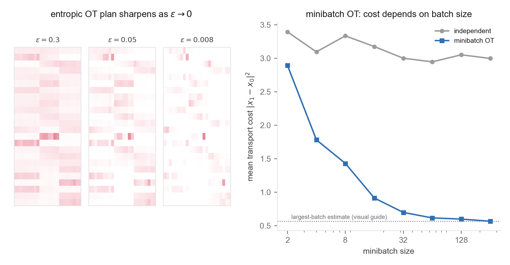

- The Kantorovich OT problem and its cost (Problem 1 part 4)
- Lagrange duality and KKT conditions for a convex program
- Coupling invariance of the CFM objective (Problem 1 part 1)
- Convexity of the negative entropy; strict convexity and uniqueness
- Bias and variance of an estimator; the tower property
- Cuturi (Sinkhorn Distances), §3-4
- Peyré & Cuturi, §4.1-4.2 (entropic OT, the dual, Sinkhorn) and §4.3 (convergence)
- Pooladian et al. (Multisample Flow Matching), §4 and Lemma 4.1 for the marginal-preserving minibatch construction, Theorem 4.2 with assumptions (A1)-(A3) and Appendix D.4 for the BatchOT asymptotics. Note that §3 is the general joint-coupling framework, not the multisample construction itself
- Tong et al. (OT-CFM), §3.2.3 for the minibatch OT-CFM construction
Problem 1 said the optimal-transport coupling is the one worth having but did not say how to get it. This problem makes it computable and then confronts the compromise every practical implementation makes. First you regularize the OT problem with entropy and find that its solution has a strikingly simple form, a rescaled Gibbs kernel, computed by an alternating-projection loop. Then you replace the population problem with a per-minibatch one and prove the fact that makes the population OT-CFM construction legitimate: the minibatch coupling differs from population OT but retains the prescribed endpoint marginals. Finite trained-model and numerical errors remain separate.
Convention for parts 1-3, the discrete problem. Discretize to empirical measures \(\widehat\rho_0=\sum_{i=1}^n a_i\delta_{x_0^i}\) and \(\widehat q=\sum_{j=1}^m b_j\delta_{x_1^j}\) with \(a=\tfrac1n\mathbf 1\) and \(b=\tfrac1m\mathbf 1\), so a coupling is a matrix \(P\in\mathbb R_{\ge0}^{n\times m}\) with row sums \(P\mathbf 1=a\) and column sums \(P^\top\mathbf 1=b\); write this constraint set \(U(a,b)\). The cost matrix is \(C_{ij}=\|x_0^i-x_1^j\|^2\), and \(\langle P,C\rangle=\sum_{ij}P_{ij}C_{ij}\) is the transport cost. The entropy is \(H(P)=-\sum_{ij}P_{ij}(\log P_{ij}-1)\), concave in \(P\), with the convention \(0\log 0:=0\) so that \(H\) is defined on the boundary of \(U(a,b)\). Reserve \(\varepsilon>0\) for the regularization strength. Note that under this normalization an assignment coupling is not a permutation matrix but a scaled one, \(P=\tfrac1n\Pi\).
Convention for parts 4-5, the population problem. Parts 4 and 5 are not about the fixed empirical measures above, and conflating the two is the main trap in this problem. There, \(\rho_0,q\in\mathcal P_2(\mathbb R^d)\) are population laws. Draw \(X_{1:k}\sim\rho_0^{\otimes k}\) and \(Y_{1:k}\sim q^{\otimes k}\) independently, and solve OT between the two random empirical measures \(\tfrac1k\sum_i\delta_{X_i}\) and \(\tfrac1k\sum_j\delta_{Y_j}\). Parts 4 and 5 use exact unregularized BatchOT, not the entropic plan of parts 2-3.

- The Kantorovich problem and its dual. Write the discrete OT problem \(\min_{P\in U(a,b)}\langle P,C\rangle\) as a linear program, and form its Lagrangian with dual variables \(f\in\mathbb R^n,\ g\in\mathbb R^m\) for the two marginal constraints. State the dual \(\max_{f,g}\ \langle f,a\rangle+\langle g,b\rangle\) subject to \(f_i+g_j\le C_{ij}\). State the complementary-slackness condition, that at the optimum \(P_{ij}>0\) only where \(f_i+g_j=C_{ij}\). Keep that separate from the sparsity bound, which is a different fact with a different proof: an optimal basic feasible solution has at most \(n+m-1\) nonzero entries because of the rank structure of the transportation polytope, not because of complementary slackness. Degeneracy can give other optimal plans or mixtures. This possible sparsity is what regularization blurs.
- Entropic regularization gives a rescaled kernel. Add the penalty and solve \[ P^\varepsilon=\arg\min_{P\in U(a,b)}\ \langle P,C\rangle-\varepsilon\,H(P). \] Show the objective is strictly convex, so the minimizer is unique. Introduce Lagrange multipliers \(f,g\) for the marginals, set the gradient in \(P_{ij}\) to zero, and derive \[ P^\varepsilon_{ij}=u_i\,K_{ij}\,v_j,\qquad K_{ij}=e^{-C_{ij}/\varepsilon},\quad u_i=e^{f_i/\varepsilon},\ v_j=e^{g_j/\varepsilon}. \] So the regularized plan is a diagonal rescaling of the Gibbs kernel \(K\); the two positive vectors \(u,v\) are whatever it takes to hit the marginals. Now separate two facts that are easy to run together, because only one of them is about strict convexity. Strict convexity gives uniqueness of the minimizer, and nothing more. What gives full support, \(P^\varepsilon_{ij}>0\), is the steepness of the negative entropy at the boundary, since \(\tfrac{d}{dp}[p(\log p-1)]=\log p\to-\infty\) as \(p\downarrow0\), together with \(a_i,b_j>0\), finite \(C_{ij}\), and the existence of a strictly positive feasible plan such as \(ab^\top\). Full support is what makes entrywise stationarity valid, unlike at the sparse LP optimum. Note also that \(u\) and \(v\) are not individually unique, since \(u\mapsto\lambda u\) and \(v\mapsto\lambda^{-1}v\) leave \(P^\varepsilon\) unchanged. The plan is unique; the scalings are unique only up to that gauge.
- Sinkhorn and the two limits. The vectors \(u,v\) must satisfy the marginal constraints \(u\odot(Kv)=a\) and \(v\odot(K^\top u)=b\). Show these are solved by the Sinkhorn iteration \(u\leftarrow a/(Kv)\), \(v\leftarrow b/(K^\top u)\), that each update is the exact projection of the current \(P\) onto one marginal constraint (a Bregman projection under the entropy geometry), and state the positive-kernel conditions under which the iteration converges linearly in a projective metric (cite Peyré & Cuturi §4.3; you need not reprove the rate), and explain why small \(\varepsilon\) worsens conditioning. Then take the two limits. As \(\varepsilon\to\infty\), show the plan tends to the independent coupling \(P\to ab^\top\). Argue this from the entropy term dominating and \(ab^\top\) being the unique maximum-entropy element of \(U(a,b)\), which is cleaner than arguing only from \(K\to\mathbf 1\mathbf 1^\top\). As \(\varepsilon\to0\), show \(P^\varepsilon\) converges to the unique maximum-entropy element of the unregularized OT solution set. Then state the permutation limit carefully, since two separate conditions are needed. In the equal-size uniform case, if the minimum-cost assignment is unique, that limit is \(\tfrac1n\Pi^\star\), a scaled permutation rather than a permutation. If several assignments are optimal, the entropy-selected limit can be a nontrivial mixture of them, so equal sizes and uniform weights alone do not buy a permutation. Interpret \(\varepsilon\) as a dial from the independent coupling toward OT, and note the practical failure at very small \(\varepsilon\), where \(K\) underflows and you need a stabilized or log-domain implementation, often with \(\varepsilon\)-scaling.
- The minibatch coupling is generally biased for the population plan. Now the estimator
OT-CFM actually uses. Define it precisely, because "read off the induced pairing" is ambiguous whenever the
batch problem has several optimal assignments. Given the batches, let
\(P^{(k)}(X_{1:k},Y_{1:k})\) be a measurable choice of optimal plan in
\(U(\tfrac1k\mathbf 1,\tfrac1k\mathbf 1)\), using a fixed deterministic tie-breaking rule if there are
ties, and for an exact assignment take \(P^{(k)}=\tfrac1k\Pi^{(k)}\) for a cost-minimizing permutation
matrix. Form the random measure and the induced population coupling
\[ \widehat\pi_k=\sum_{i,j=1}^k P^{(k)}_{ij}\,\delta_{(X_i,Y_j)},\qquad
\pi_k=\mathbb E\big[\widehat\pi_k\big], \]
where the expectation of a random measure is read through bounded test functions. Equivalently, condition
on the batches, sample \((I,J)\) with probability \(P^{(k)}_{ij}\), and return \((X_I,Y_J)\).
Now show that \(\pi_k\) need not equal \(\pi^\star\). Do not try to show they always differ, since they coincide in degenerate cases such as a common point mass. One clean example suffices. Take \(\rho_0=q=\tfrac12(\delta_0+\delta_1)\) with \(c(x,y)=(x-y)^2\), so the unique population OT plan is diagonal, \(\pi^\star=\operatorname{diag}(\tfrac12,\tfrac12)\), and never pairs \(0\) with \(1\). Show that at \(k=2\) some off-diagonal entry of \(\pi_2\) is strictly positive. (The full computation gives \(\pi_2=\tfrac1{16}\begin{pmatrix}5 & 3 \\ 3 & 5\end{pmatrix}\), which you may verify but need not derive.) A within-batch matching pairs points the population plan would not, because it sees only \(k\) samples. Since a population OT plan need not be unique in general, either assume uniqueness when you write \(\pi^\star\) or phrase the conclusion as \(\pi_k\notin\operatorname*{arg\,min}_{\pi\in\Pi(\rho_0,q)}\int c\,\mathrm d\pi\).
State Pooladian et al.'s asymptotic BatchOT result and its assumptions as \(k\to\infty\); do not replace it with an unsupported claim that every discrepancy is monotone or that \(k\) merely approaches a finite support size. Finally, prove the cost sandwich \[ \mathcal C^\star(\rho_0,q)\ \le\ \mathbb E\Big[\textstyle\sum_{i,j}P^{(k)}_{ij}\,c(X_i,Y_j)\Big]\ \le\ \mathbb E[c(X,Y)],\qquad X\sim\rho_0,\ Y\sim q\ \text{independent}. \] The left inequality holds because part 5 shows \(\pi_k\) is a valid population coupling. The right holds because the sampled-order permutation \(i\mapsto i\) is feasible in every equal-size batch. Note the anchor \(\pi_1=\rho_0\otimes q\), and note also that these facts alone give no monotonicity in \(k\). - But it preserves the population marginals. Prove the fact that validates the
scheme, that the minibatch coupling \(\pi_k\) has marginals exactly \(\rho_0\) and \(q\). With the
definition from part 4 the argument is immediate, and it is stronger than a bijection argument because it
never needs the batch solution to be unique. Because every \(P^{(k)}\in U(\tfrac1k\mathbf 1,\tfrac1k\mathbf 1)\),
\[ (\mathrm{pr}_0)_\#\widehat\pi_k=\frac1k\sum_{i=1}^k\delta_{X_i},\qquad
(\mathrm{pr}_1)_\#\widehat\pi_k=\frac1k\sum_{j=1}^k\delta_{Y_j}, \]
whatever the plan is. Take expectations over the batches, and since the samples are i.i.d. these are
exactly \(\rho_0\) and \(q\). The result therefore holds for entropic minibatch plans too, not only for
exact assignments.
Now make the induced path explicit rather than borrowing it. With \(T_t(x_0,x_1)=(1-t)x_0+tx_1\), set \(p_t=(T_t)_\#\pi_k\) and \(v_t(x)=\mathbb E[X_1-X_0\mid X_t=x]\), so that \(p_0=\rho_0\) and \(p_1=q\) follow directly from the marginals above. Conclude, by combining this with Problem 1 part 1, that OT-CFM targets the marginal velocity of that path. State the ideal regularity and exact-learning conditions under which the construction reaches \(q\), namely a well-defined marginal velocity, regularity giving a unique flow, exact representation and regression of \(v_t\), and exact integration, and say why they do not guarantee a finite trained sampler. Two endpoint subtleties are worth naming. If \(q\) is a finite atomic measure while \(\rho_0\) is continuous, no regular invertible flow maps one onto the other at finite time, so read \(q\) as the population law or work at the level of probability paths. And the practical conditional path of Tong et al. carries a Gaussian bandwidth \(\sigma\), whose endpoints are smoothed, with the clean statement recovered as \(\sigma\to0\). Treat reductions in conditional velocity variance, gradient variance, trajectory complexity, or solver error as results requiring their own assumptions or as empirical hypotheses for Problem 3, not as consequences of marginal preservation alone.